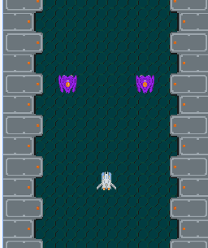

Table of contents

はじめに
前回は、当たり判定を追加しました。今回は、背景を作成します。
背景画像を追加する
- 背景画像をスプライトとして追加します。画像は2種類にしてスクロール速度を変えて奥行き感を表現します。
- 背景をループしてスクロールできるように、それぞれ同じ画像を2つ縦に繋げて並べます。画像はグループに追加して管理します。
- 背景画像は、画面の縦サイズより少し大きめにすることで、スクロールさせる時の画像の移動をより自然に見せることができます。
// グループ
this.bgGroup = DisplayElement().addChildTo(this);
this.bg2Group = DisplayElement().addChildTo(this);
// 背景作成
createBackground: function() {
var bgGroup = this.bgGroup;
var bg2Group = this.bg2Group;
(2).times(function(i) {
// 一番下の背景
var bg = Sprite('bg').addChildTo(bgGroup);
bg.setPosition(this.gridX.center(), this.gridY.center());
// 上の背景
var bg2 = Sprite('bg2').addChildTo(bg2Group);
bg2.setPosition(this.gridX.center(), this.gridY.center());
// スクロールスピード
bg.physical.velocity.y = 2;
bg2.physical.velocity.y = 4;
}, this);
// それぞれ2つの背景を縦に繋げる
bgGroup.children.last.bottom = bgGroup.children.first.top;
bg2Group.children.last.bottom = bg2Group.children.first.top;
},
背景をループしてスクロールさせる
背景のスクロール管理は、update内で行います。
// 毎フレーム処理
update: function() {
// 背景の移動管理
this.scrollBackgrounds();
// 当たり判定
this.hitTestBulletToPlayer();
this.hitTestEnemyToPlayer();
this.hitTestBuleetToEnemy();
},
// 背景の移動管理
scrollBackgrounds: function() {
var bgGroup = this.bgGroup;
var bg2Group = this.bg2Group;
// 一番下の背景位置入れ替え
if (bgGroup.children.last.y > this.gridY.center()) {
bgGroup.children.first.addChildTo(bgGroup);
bgGroup.children.last.bottom = bgGroup.children.first.top;
}
// 上の背景位置入れ替え
if (bg2Group.children.last.y > this.gridY.center()) {
bg2Group.children.first.addChildTo(bg2Group);
bg2Group.children.last.bottom = bg2Group.children.first.top;
}
},
- 縦に並べた2つの同じ画像のうち、上位置の画像が一定の位置まで移動したら、下の位置をグループに追加し直して、縦に繋がるように位置を調整します。
- 配列に追加し直すことで、firstで下の位置の画像、lastで上の位置の画像を常に参照することができます。
- 上記の処理を繰り返すと、ループで画面をスクロールさせることができます。